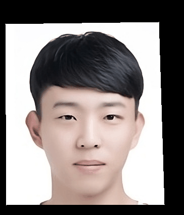
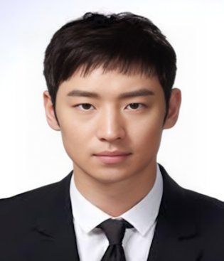
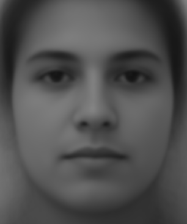
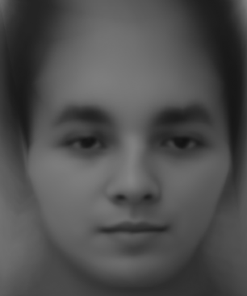
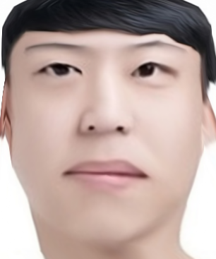

Face Morphing

Overview
In this project, I will produce a morph animation with my face into someone else's. To compute morphing, I needed to first find way to get points in each features and warp to target image. I used inverse affine matrix transform and Delaunay triangulation to effectively apply morphing from one to another.
Part 1: Defining Correspondences
To apply morphing from my face to dear Son, I first needed to get correspondences of both images. In order to do this, I used previous Berkeley Computer Vison student class tool (Link).
Son

Jae
I tried to pick as many points as possible on notable features like the nose, lips, eyes, etc. After getting the points using the tool, I applied Delaunay triangulation to generate indices that form triangles.
 Son
Son
 Jae
Jae
Part 2: Computing the "Mid-way Face"
In order to compute 'Mid-way' face,
2) warping both faces into that shape, and
1. computing the average shape (a.k.a the average of each keypoint location in the two faces),
\( (Image1 + Image2 ) / 2 \)
2. warping both faces into that shape
Using loop, from the points and corresponding triangle indices I got from part 1, I find the affine transformation matrix and multiply it by one destination triangle. Then, I apply bilinear interpolation.
3. cross-dissolve the colors together.
Son
 My face + Jae
My face + Jae
Son
Part 3: The Morph Sequence
To make the morph sequence, it is very similar to what I did in part 2, except that I gradually increased the warp fraction and cross-dissolve fraction. For the sequence, I used 45 frames, starting from my face and morphing into Son's face.
My face to Son
Part 4: The "Mean face" of a population
Here, I created a mean face, which is a sum of all faces and divide by number of faces. For the dataset, I used (Link).
In order to create a mean face more specifically,
1. Get all points that were annotated in the dataset and sum them up divide by the number of population. Add 4 points to corner of each points so that it captures the whole image
2. Morph each of the faces in the dataset provided into the average shape.
3. Compute the average face of the population.
Here are selected faces out of 200 faces:
Here are selected smile faces out of 200 faces :

Average Population Face with Morphing
Average Population Smile Face without Morphing
Average Population Smile Face with Morphing
Now, from images that I got; I warped my face into average population's shape and average population's shape to my face shape.

Average Population Face Shape to My Face Shape
Part 5: Caricatures: Extrapolating from the mean
I made Caricatures of my face by extrapolating from the average population face shape that I got from previous part. For my previous part, I was using 0 to 1 (inclusive) for my warping fraciton, but to create a Caricatures, I used -0.5, and 1.5

alpha = 1.5
Bells and Whistles: 1. Gender Change
For my first B&W, I try to change my gender of my face to female. The dataset I used is the same that I used for part 3 and 4 but I selected only females faces so that the average face of female would not look like male.
1. I selected only female faces and points. Then get read those faces and points.
2. Resized my faces more larger so that it matches to the face that I am trying to compare with.
3. I then calculated the mean shape of the females' faces and morph each one of them into average shape.
4. Morph my image to female average face to change the gender of the face.
The resulting face looks a bit like a female, but making my hair longer and removing the band would make it appear more feminine.
Bells and Whistles: 2. Aging Music Video
I made a music video for my older sister. I was not able to get her middle school picture, so the ages range from 3, 5, 10, 17, 20, 23, 25, 27, to 30. For each age, there are 90 frames, and I used an online GIF to MP4 converter tool to convert it and add audio.
Acknowledgment
I used the Unemployables Portfolio Template for this website.